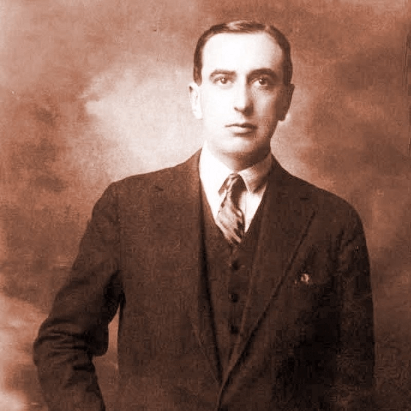
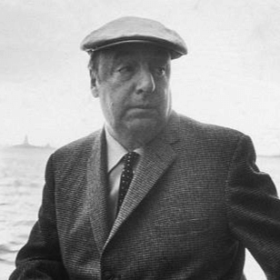
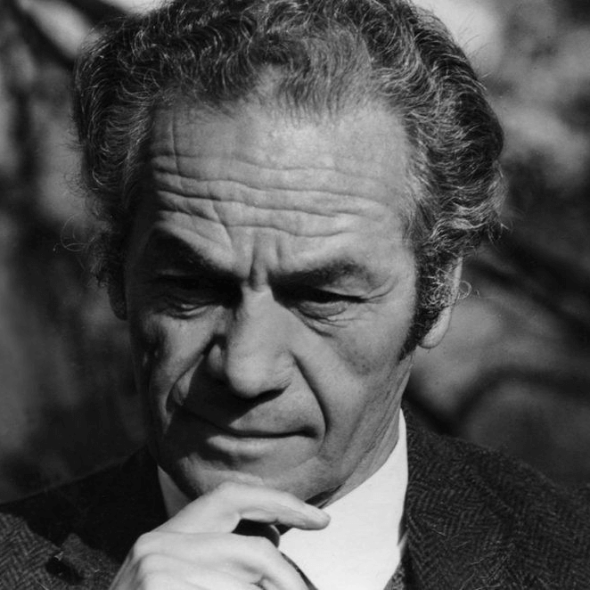

|  |
Vicente HuidobroVicente Huidobro, el visionario, desafía los límites de la poesía desde su paracaídas infinito. Fundador del creacionismo, su obra "Altazor" es un viaje vertiginoso por los cielos de la imaginación. Más información |
|  |
Pablo NerudaPablo Neruda, "el poeta", es llanto de hijo de ferroviario, descendiente del Cid. Sus versos son un río que fluye entre la pasión y la política, entre el amor y la lucha. Ganador del Premio Nobel de Literatura en 1971, su legado incluye "Veinte poemas de amor y una canción desesperada" y "Canto General". Más información |
|  |
Nicanor ParraNicanor Parra, el "antipoeta", revolucionó la lírica con su "antipoesía". Rompió cánones tradicionales usando lenguaje cotidiano y creando "artefactos" literarios. Es el hermano mayor de Violeta y Roberto, con quienes forma una de trinidades poéticas más relevantes de Chile. Más información |